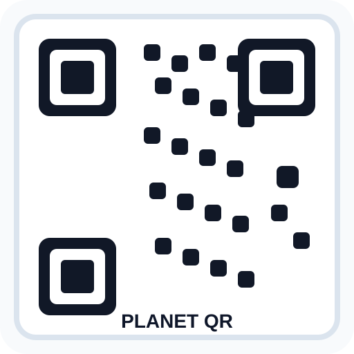

🧭
下载前后都能进群
安装遇到问题？找真人帮你
下载、安装、配置过程中遇到任何卡点，都可以在社群里直接问。有人帮你看，比自己摸索快得多。
加群小提示
添加时附上你的 系统类型 + 遇到的现象 + 当前卡住的步骤，这样帮你解决问题会更快。
更多交流方式
你也可以在这些渠道里找到其他用户的经验和帮助。



- 还没下载：先加企业微信或进 QQ 群，让别人帮你判断该走哪条安装路径。
- 已经下载：如果打不开或解压后卡住，在微信群或企微里发截图最快。
- 已经装好：去知识星球看更多教程、案例和进阶用法。
系统要求
下载前先看这几项
| 系统 | Windows 10/11、macOS 12+，Linux 支持通过安装脚本配置 |
| 内存 | ≥ 4GB RAM |
| 磁盘 | ≥ 500MB 可用空间 |
| 网络 | 如果使用在线模型，需要能访问对应服务商；国内用户优先选择国内模型 |